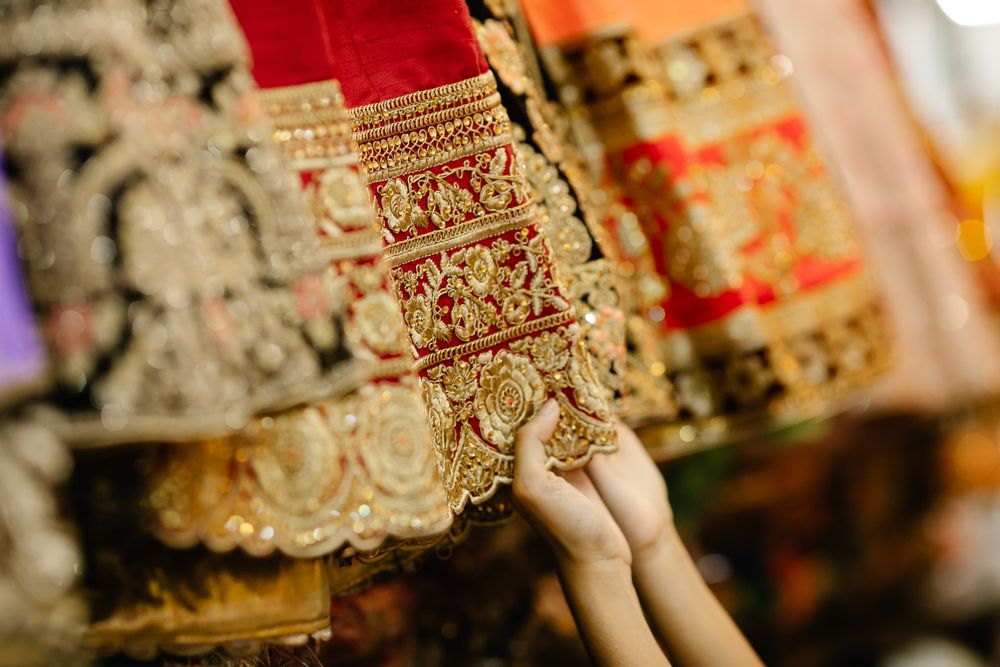

The Boutique
Eleven karigars,
one maroon door
I'm Anaya Chawla. I learned this trade at my grandmother's adda frame in Chowk, spent six years cutting for two Delhi bridal houses, and came home to Lucknow in 2016 to open a boutique that works the way she did: slowly, in the open, with the price said first.
Lehenga Luxe is a small room above a mithai shop in Aminabad and a workroom behind it where eleven karigars embroider. Nothing here is bought in finished and re-labelled. Every skirt is cut in the workroom, every choli is stitched to the wearer's own measurements, and every border you see in the drop was drawn by hand on tracing paper before a single dabka was threaded.
Lucknow is a zardozi city. The work is done with a hooked needle — the aari — through fabric stretched drum-tight on a wooden adda, and it cannot be hurried without showing. A gota patti border is quicker and lighter; a full zardozi jaal can take one karigar six weeks of full days. I would rather tell you that on this page than discover it together in a panic in your wedding week.

Two opinions I hold that cost me sales, and I hold them anyway. First: a bride should sit down, eat, and dance in her lehenga before she pays for it — so every fitting here includes what my staff call the thali test. Second: your grandmother's saree is worth more than anything I can sell you, which is why reworking family fabric is a standing service here, not a favour.
How a made-to-measure order runs
- 01
The conversation — week 0
Forty-five minutes in the boutique or on a call. We talk silhouette, fabric and embroidery, and I price it from the same rate table printed on the home page. No quote arrives later by message; you leave knowing the number.
- 02
Measurements & the order card — week 0
Fourteen measurements, taken twice. Your delivery date is written on the order card before the 40% advance is taken. If I cannot make the date, the card is never written — that is the whole system.
- 03
Embroidery — weeks 1 to 4
The skirt panels go on the adda. You get a photograph of your own panel at the halfway point, not a stock update. Choli stitching runs alongside in the last week of embroidery.
- 04
First fitting — two weeks before delivery
Skirt and choli in near-final form. We pin the fall, set the dupatta drape, and do the thali test. Changes that cost money are priced in front of you, on paper.
- 05
Final fitting & collection — delivery week
The balance is paid only here, when the outfit is on you and right. It leaves pressed, in a cotton bag — never plastic — with a repair card in the pocket.
What I put in writing
- Two fittings included in every made-to-measure price — a third, if I ask for it, is on me
- Blouse stitching is included; there is no separate tailor bill at the end
- Your delivery date is written on the order card before the advance is taken
- Advance is 40%; the balance is paid only at the final fitting, when the outfit is right
- Alterations are free for 60 days after delivery
- Loose embroidery is re-set free for a year — 34 repairs honoured so far, all on the card